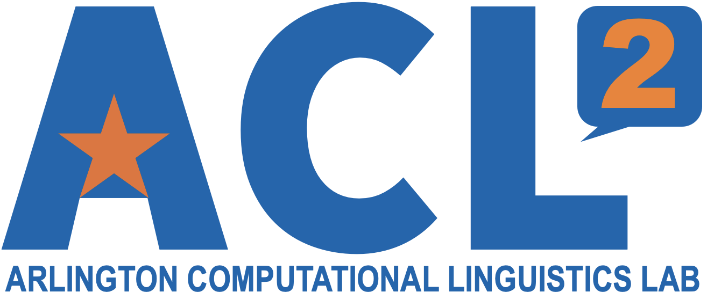

Home
Research
People
Resources and Links
Contact
Links
University of Texas at Arlington
Computer Science and Engineering Department

Research
Commonsense Reasoning
Text Generation
Dialogue and Question Answering
Information Extraction
Other NLP
Commonsense Reasoning
Text Generation
Dialogue and Question Answering
Information Extraction
Other NLP